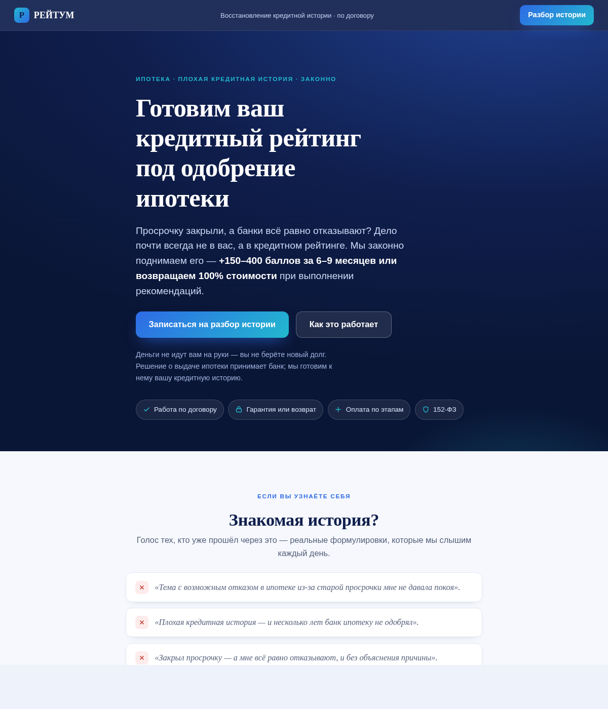

ВКИ VKI-01РЕЙТУМ
S1 ИпотечникГарантия под одобрение ипотеки + глубокая отстройка от «Кредитного доктора»/серых схем
«Готовим ваш кредитный рейтинг под одобрение ипотеки»
Комплексное восстановление КИ — 59 900 ₽ (рассрочка 6 мес ≈ от 9 983 ₽/мес); +150–400 баллов за 6–9 мес. или возврат 100% стоимости при выполнении рекомендаций
Гипотеза теста
Длинный продающий лонгрид с множеством доказательных блоков (механика отказов → отстройка от мошенников → шаги → гарантия → цена-якорь → кейсы → FAQ) снимает доминирующее возражение «развод/плати за воздух» глубже, чем короткий квиз-первый-экран, и даст выше CR лид→продажа за счёт прогрева; тест против контроля vki_s1_ipoteka (квиз-гейдж).
Объявления Директа
56 — 30
81
Кредитный рейтинг под ипотеку — законно — Рост или возврат стоимости
+150–400 баллов за 6–9 мес. или вернём 100%. Решение по ипотеке — за банком
Отказали в ипотеке из-за старой просрочки? — Поднимем рейтинг по договору
Дело в рейтинге, а не в вас. Готовим под ипотеку. Разбор истории онлайн
Восстановление кредитной истории под ипотеку — Гарантия: рост или возврат
Законно, по договору, деньги не на руки. Разбор кредитной истории онлайн
Баннеры (3)
Цели: quiz_start, quiz_complete, submit_application · кампания: ads/vki-01-ipoteka/